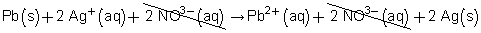
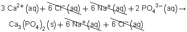
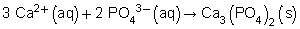
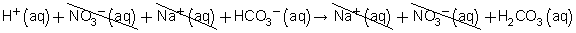

Module 6—Stoichiometry
 Read
Read
net ionic equation: a type of balanced chemical equation that lists only the reacting particles
In Module 4, Lesson 1, you learned the effect water can have on dissolving ionic compounds. The process of dissociation creates separated ions, each with the possibility to collide with other ions and participate in a chemical reaction. To communicate which ions are participating in a chemical reaction, a unique type of balanced chemical equation is used—the net ionic equation. A net ionic equation is a type of balanced chemical equation that lists only the reacting particles.
Read “Net Ionic Equations” on pages 281 to 283 of your textbook. Work through the sample problem and examples.
 Self-Check
Self-Check
SC 7. Complete “Practice” questions 10, 11, and 13 on page 284 of your textbook.
Self-Check Answers
SC 7. “Practice” questions 10, 11, and 13, page 284
- Write the balanced chemical equation.
Pb(s) + 2 AgNO3(aq) → Pb(NO3)2(aq) + 2 Ag(s)
Now, write the total ionic equation.
Pb(s) + 2 Ag+(aq) + 2 NO3–(aq) → Pb2+(aq) + 2 NO3–(aq) + 2 Ag(s)
Cancel the ions that appear on both sides of the equation.

Therefore, the net ionic equation is
Pb(s) + 2 Ag+(aq) → Pb2+(aq) + 2 Ag(s)
- (a)
Balanced chemical equation: 3 CaCl2(aq) + 2 Na3PO4(aq) → Ca3(PO4)2(s) + 6 NaCl(aq)
Total ionic equation: 
Net ionic equation: 
(b) The spectator ions are chloride and sodium.
-
(a)
Balanced chemical equation: HNO3(aq) + NaHCO3(aq) → NaNO3(aq) + H2CO3(aq)
Total ionic equation: 
Net ionic equation: H+(aq) + HCO3−(aq) → H2CO3(aq)
(b) The spectator ions are nitrate and sodium.
 Module 6: Lesson 1 Assignment
Module 6: Lesson 1 Assignment
To complete your assignment as an online quiz, click on Module 6 Lesson 1 Assignment in the "Quizzes".
To complete your assignment as an MSWord document, click Module 6 Assignment 1.